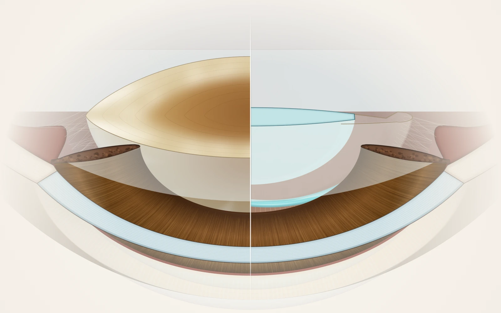
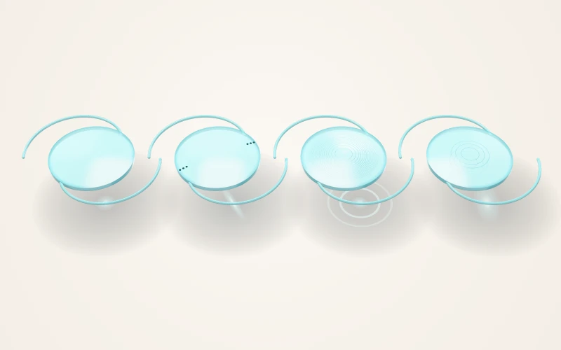
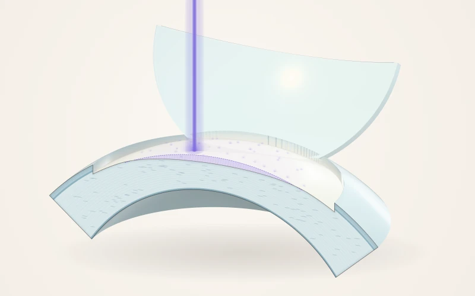
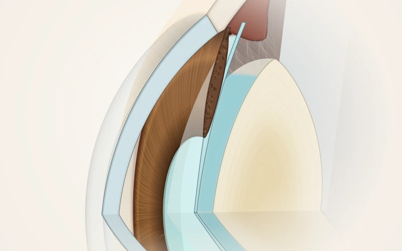
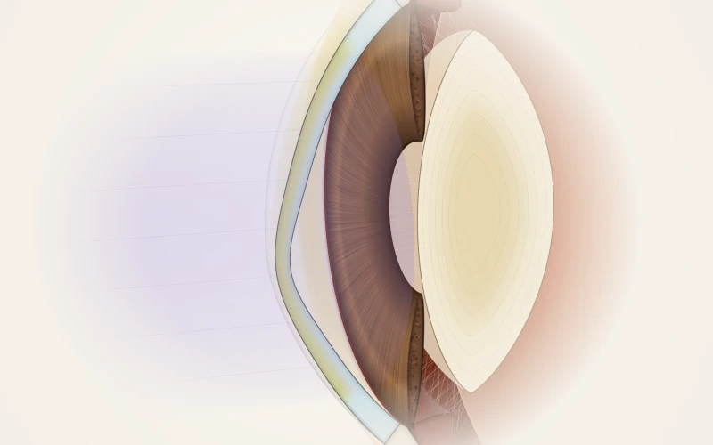
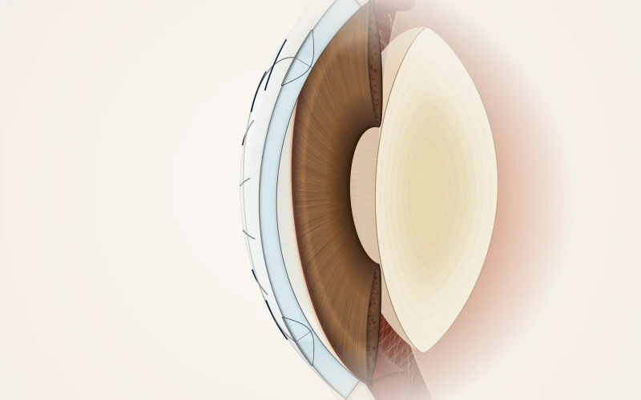
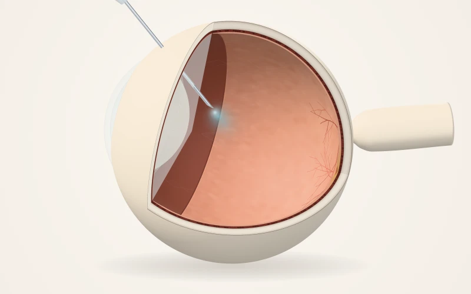

The clouded natural lens is removed and replaced with a clear artificial lens once blurred vision starts to affect daily life.
Read the guide: Cataract surgery01Consultant ophthalmologistMadinah
Consultant Ophthalmologist (Cornea, Cataract & Refractive Surgery)
Chief of Staff – Magrabi Health Madinah and Associate Professor – Taibah University. In ophthalmic practice since 1998, he sees patients at Magrabi Health Eye & ENT Hospital – Madinah.
Procedures & treatments
Each procedure has a page explaining the anatomy, the steps, recovery and risks. General education pending review by Dr. Maan; it does not replace an examination.
The full procedure library01–02

The clouded natural lens is removed and replaced with a clear artificial lens once blurred vision starts to affect daily life.
Read the guide: Cataract surgery
The lenses placed during cataract surgery: monofocal, extended depth of focus, multifocal or trifocal, and toric for astigmatism.
Read the guide: Lens implants (IOLs)03–04

Reshaping the cornea with a laser (LASIK, surface PRK, SMILE) to reduce dependence on glasses or contact lenses.
Read the guide: Laser vision correction
A thin lens placed inside the eye while keeping the natural lens — an option for vision correction when laser is not suitable.
Read the guide: Implantable contact lens (ICL)05–07

Diagnosing a thinning, bulging cornea, and cross-linking it with riboflavin drops and UV light to help slow progression.
Read the guide: Keratoconus & corneal cross-linking (CXL)
Replacing all or part of a damaged cornea with donor corneal tissue when other treatments are not enough.
Read the guide: Corneal transplant (keratoplasty)
Medicine delivered directly inside the eye to treat retinal conditions such as wet macular degeneration and diabetic macular oedema.
Read the guide: Intravitreal injections